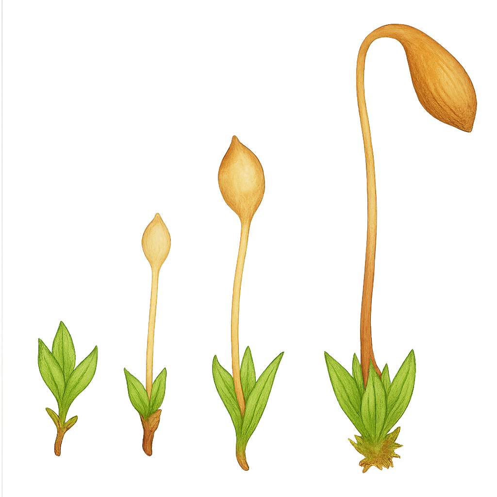

Funariaceae
Cord Moss Family
Funariaceae is a cosmopolitan family of mosses (division Bryophyta), commonly found colonizing disturbed soil, especially nutrient-rich or recently burned sites. They are recognized by their leafy gametophytes and often distinctive sporophytes featuring a long seta and an asymmetric, pear-shaped capsule, typified by the well-known Cord Moss, Funaria hygrometrica.
Overview
Funariaceae is a family within the order Funariales, belonging to the large class Bryopsida (true mosses). This family includes several well-known genera like Funaria, Physcomitrium, and Entosthodon, encompassing around 200-300 species worldwide.
These mosses are typically terrestrial and often act as pioneers or ruderals, quickly colonizing bare, disturbed, or nutrient-enriched soil. They are particularly common on sites after fires (hence the common name "Bonfire Moss" for Funaria hygrometrica), in gardens, fields, and waste areas. Their life cycle involves an alternation between the dominant leafy green gametophyte generation and the dependent sporophyte generation, which produces spores.
The family is characterized by relatively broad leaves on the gametophyte and, especially in Funaria, by a distinctive sporophyte with a long, often twisted seta (stalk) and an asymmetric, inclined, pear-shaped capsule bearing a complex peristome (tooth-like structure) that regulates spore release.
Quick Facts
- Scientific Name: Funariaceae
- Common Name: Cord Moss family
- Notable Genera: Funaria, Physcomitrium, Entosthodon
- Number of Species: Approximately 200-300
- Distribution: Cosmopolitan
- Evolutionary Group: Bryophytes - Mosses (Bryophyta) - Bryopsida - Funariidae - Funariales
Key Characteristics
Gametophyte
The life cycle begins with a spore germinating into a filamentous or thalloid protonema, from which buds arise to form the mature leafy gametophyte. The gametophyte consists of stems bearing leaves (phyllids). Plants are typically small to medium-sized, forming tufts or cushions. Leaves are often broad (ovate to obovate), usually with smooth margins and a single distinct midrib (costa). Leaf cells are typically large, smooth, and somewhat thin-walled (parenchymatous). Rhizoids anchor the plant to the substrate.
Reproductive Structures (Gametangia)
Sexual structures (gametangia) are borne at the tips of main stems or branches. Plants can be autoicous (male and female structures on the same plant but separate branches) or dioicous. Antheridia (male) and archegonia (female) are typically clustered and surrounded by modified leaves (perigonial or perichaetial leaves).
Sporophyte
The diploid sporophyte develops from the fertilized egg within the archegonium and remains attached to the gametophyte. It is differentiated into three distinct parts:
- Foot: Embedded within the gametophyte stem, absorbing nutrients.
- Seta: A stalk of variable length, often long and slender in this family. In Funaria, the seta is characteristically hygroscopic, twisting when dry and untwisting when moist, which aids spore dispersal.
- Capsule (Sporangium): The spore-producing structure at the apex of the seta. In Funariaceae, the capsule is highly characteristic: often asymmetric, pear-shaped (pyriform), and inclined to nodding or horizontal (especially in Funaria). It typically has a distinct neck (apophysis) at the base, often with stomata. The capsule opens via a detachable lid called the operculum. Beneath the operculum is the peristome, typically double in this family, consisting of 16 outer teeth and 16 inner segments, which move in response to humidity to control spore release.
Some genera, like Physcomitrium, have erect, symmetric capsules and reduced or absent peristomes.
Spores
Spores are produced within the capsule via meiosis. They are typically small, spherical, and may have a faint trilete scar. The surface ornamentation varies but is often relatively smooth or finely papillose.
Cellular and Chemical Features
Gametophyte cells contain multiple small, discoid chloroplasts (unlike the single large one common in hornworts). They lack specialized vascular tissue (xylem/phloem) and rely on water for fertilization. They do not form symbiotic relationships with Nostoc.
Field Identification
Identifying Funariaceae often relies on recognizing the habitat preference and the distinctive sporophyte characteristics, especially the capsule shape and seta.
Primary Identification Features
- Leafy Moss Gametophyte: Typically small tufts or cushions with broad leaves having a single costa.
- Distinct Sporophyte: Composed of foot, seta, and capsule.
- Asymmetric, Pyriform Capsule: Often inclined or nodding (esp. in Funaria). Symmetric and erect in Physcomitrium.
- Long Seta: Often prominent and hygroscopic (twisting) in Funaria.
- Habitat: Frequently found on disturbed soil, bare ground, or burn sites.
- Double Peristome: Present under the operculum (requires magnification, may be reduced/absent in some genera).
Secondary Identification Features
- Broad Leaf Cells: Often large and relatively clear.
- Cosmopolitan Distribution: Common in many parts of the world.
- Ephemeral Nature: Often appearing quickly after disturbance or fire.
Seasonal Identification Tips
Look for different stages:
- Gametophyte: Can be found year-round when moisture is sufficient.
- Sporophyte: Develop seasonally, typically appearing in spring or after favorable conditions (rain, fire). The mature capsules with their characteristic shape and often twisted setae (in Funaria) are key identifiers. Peristome teeth are best observed on dry, dehisced capsules.
Common Confusion Points
Funariaceae can be confused with other moss families:
- Bryaceae: Also common on soil, often have pear-shaped capsules, but capsules are typically pendulous with a smaller mouth, and leaf cells are often narrower/longer.
- Pottiaceae: Very diverse family common on soil/rock, but typically have erect capsules and different peristome structures (often single, filamentous teeth).
- Ditrichaceae: Often pioneers on soil, but typically have narrower leaves and erect, cylindrical capsules.
- Leafy Liverworts: Distinguished by leaf arrangement (often 2-3 ranks), leaf shape (often lobed or with underleaves), presence of oil bodies, and very different sporophyte structure (ephemeral seta, capsule splitting into 4 valves, no peristome).
- Hornworts: Distinguished by thalloid gametophyte and horn-like sporophyte.
Field Guide Quick Reference
Look For (Gametophyte):
- Leafy moss, often in tufts
- Broad leaves, single costa
- Large leaf cells
- Often on disturbed/burnt soil
Look For (Sporophyte):
- Distinct foot, seta, capsule
- Seta often long (twists in Funaria)
- Capsule asymmetric, pyriform, inclined (Funaria)
- Capsule symmetric, erect (Physcomitrium)
- Double peristome (often present)
Notable Examples
This family includes some very common and well-studied mosses.

Funaria hygrometrica
Cord Moss / Bonfire Moss
A cosmopolitan species famous for colonizing nutrient-rich sites, especially after fires. It forms yellowish-green tufts. Its sporophyte is highly distinctive with a long seta that twists prominently when dry (hence "Cord Moss") and an asymmetric, grooved, pear-shaped capsule that nods downwards.

Physcomitrium pyriforme
Urn Moss / Pear-fruited Physcomitrium
Another common species found on bare, moist soil, often in gardens or fields, particularly in spring. It forms small green tufts. Unlike Funaria, its capsule is typically erect, symmetric, wide-mouthed (urn-shaped when dry), and lacks a peristome or has a very rudimentary one. The seta is shorter than in Funaria.

Entosthodon spp.
(Various Entosthodon species)
This genus includes species similar to Funaria but often smaller, and typically with erect or slightly inclined capsules that are less markedly asymmetric. The peristome structure also differs subtly. They are found on soil in various habitats worldwide.
Phylogeny and Classification
Funariaceae is the largest family within the order Funariales, which belongs to the subclass Funariidae within the class Bryopsida (true mosses). The Funariidae represent a distinct lineage characterized by certain features of spore development and peristome structure.
Molecular phylogenetics confirms the placement of Funariaceae within Funariales and its relationship to other small families in the order like Disceliaceae and Gigaspermaceae. The family itself shows clear generic distinctions, with genera like Physcomitrium (lacking a peristome) representing modifications from the typical Funaria structure.
Position in Plant Phylogeny
- Kingdom: Plantae
- Clade: Embryophytes (Land Plants)
- Division: Bryophyta (Mosses)
- Class: Bryopsida
- Subclass: Funariidae
- Order: Funariales
- Family: Funariaceae
Evolutionary Significance
Funariaceae is significant for:
- Ecological Role as Pioneers: Demonstrates adaptations for rapid colonization of disturbed or ephemeral habitats (e.g., post-fire).
- Hygroscopic Mechanisms: The twisting seta of Funaria and the humidity-responsive peristome are classic examples of mechanisms facilitating spore dispersal.
- Model Organisms: Physcomitrium (Physcomitrella) patens (often placed in Funariaceae) is a major model organism in plant biology, particularly for genetics, developmental biology, and genomics due to its simple structure and efficient homologous recombination.
- Bryophyte Diversity: Represents a distinct lineage within the Funariidae subclass of mosses.